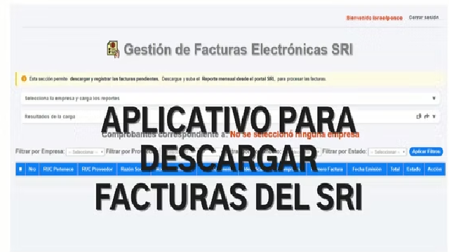
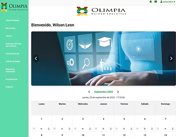
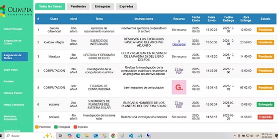
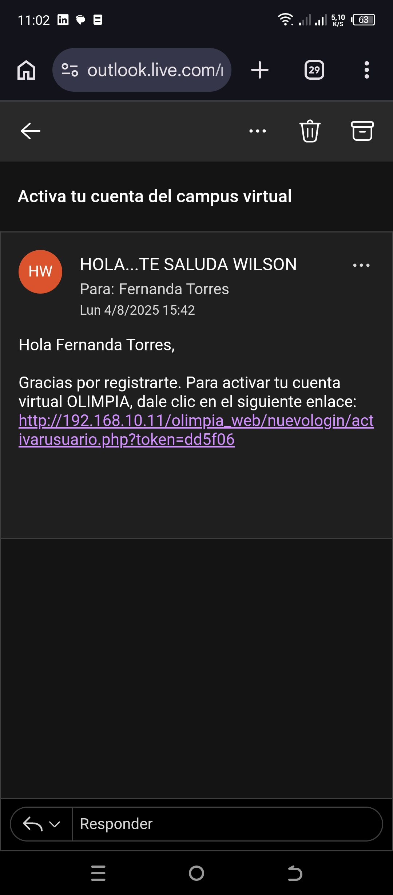
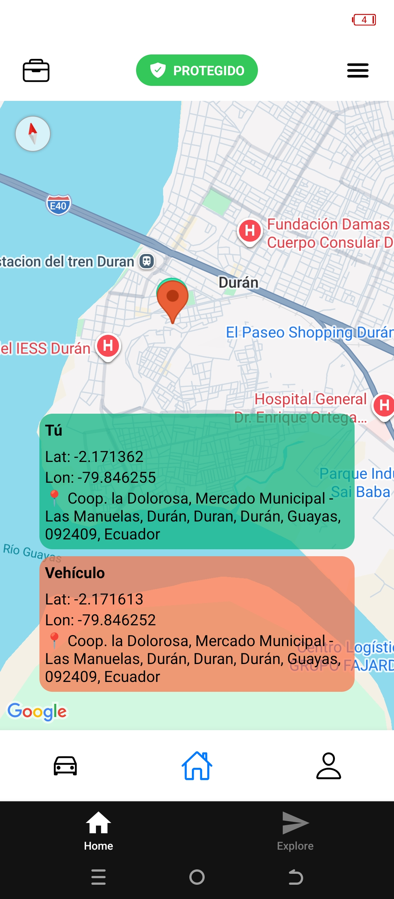
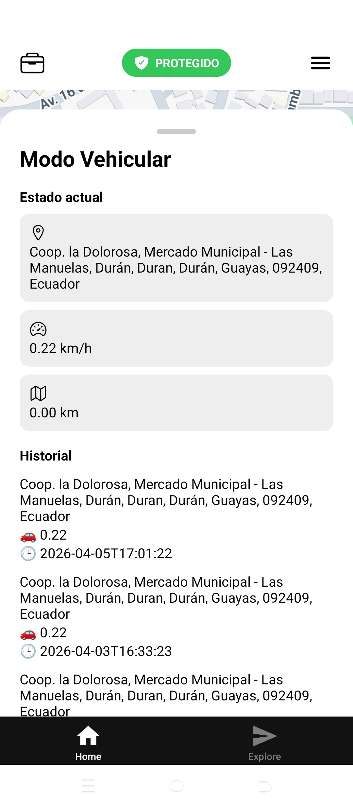
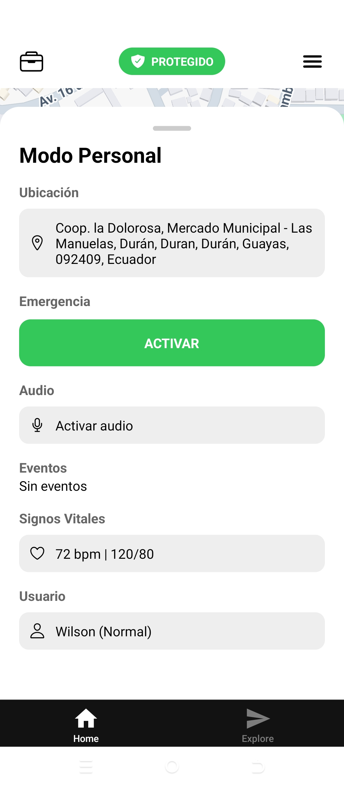

Ing. Wilson Israel Leon Ponce
Inicio
Profesional en ingeniería en ciencias computacionales, tengo experiencia en soporte técnico en TIA S.A, en la Unidad educativa Olimpia con el cargo de analista desarrollador y desarrollé más mi habilidad en el análisis de datos en sudamericana de Software S.A. Soy una persona que me gustan desafíos y lograrlos; apasionado al hardware y software en la cual me adapto a cualquier tipo de proyecto. Estoy buscando una oportunidad para crecer profesionalmente porque tengo la certeza y confianza que puedo lograr los objetivos de la empresa y seguir creciendo profesionalmente. Cuento con disponibilidad horaria y movilización.
Proyectos Realizados
Página web para el registro de facturas del SRI
Página web para la descarga de facturas del SRI
por medio de la API exclusivo para desarrolladores
del SRI.
Se crearon microservicios con Python para la descarga
automática de las facturas; además de la inclusión
de los microservicios con la interfaz hecha en
JavaScript y HTML con diseño con Bootstrap y
metodología ágil del software.
Abre el siguiente enlace y verifícalo:
http://201.183.220.90/olimpia_web/nuevologin/loginolimpia.html

Plataforma web educativa
Plataforma web estudiantil, para la asignación
de tareas y calificaciones.
La plataforma tiene un diseño intuitivo para el
estudiante y padres de familia en la cual obtiene
la interacción entre profesores, padres de familia
y estudiante para colaborar con la enseñanza digital.
Está escrito en lenguaje JavaScript con HTML y diseño
con CSS @media para adaptación de otros dispositivos.
Abre el siguiente enlace y verifícalo:
http://201.183.220.90/olimpia_web/nuevologin/loginolimpia.html



Prototipo de riego automatizado para el cultivo de cacao
Proyecto para el riego del cultivo de cacao para la
finca Rosita de la ciudad Simón Bolívar.
Se llevó a cabo por medio de un prototipo electrónico
utilizando sensores y actuadores para la automatización
de labor diaria del campesino.
En la cual se facilitó la creación de una aplicación
móvil para el control del riego de una forma adecuada
desde cualquier ubicación y tiempo que requiera activar
la tarea de regar sus cultivos.
Abre el siguiente enlace y verifícalo:
http://201.183.220.90/olimpia_web/nuevologin/loginolimpia.html
Prototipo GPS vehicular/personal
Proyecto para localizar un vehículo o persona
con opciones de seguridad para la persona.
Abre el siguiente enlace y verifícalo:
http://calculodiferencialportafolio.atwebpages.com/




Aplicativo web para la gestión de tareas estudiantiles de la Universidad de Guayaquil
Proyecto para la gestión de un portafolio de un
estudiante en la cual agregaba sus tareas en una
página web y lograría visualizar el profesor de la
asignatura de cálculo diferencial las tareas y fecha
que subió el estudiante.
Abre el siguiente enlace y verifícalo:
http://calculodiferencialportafolio.atwebpages.com/